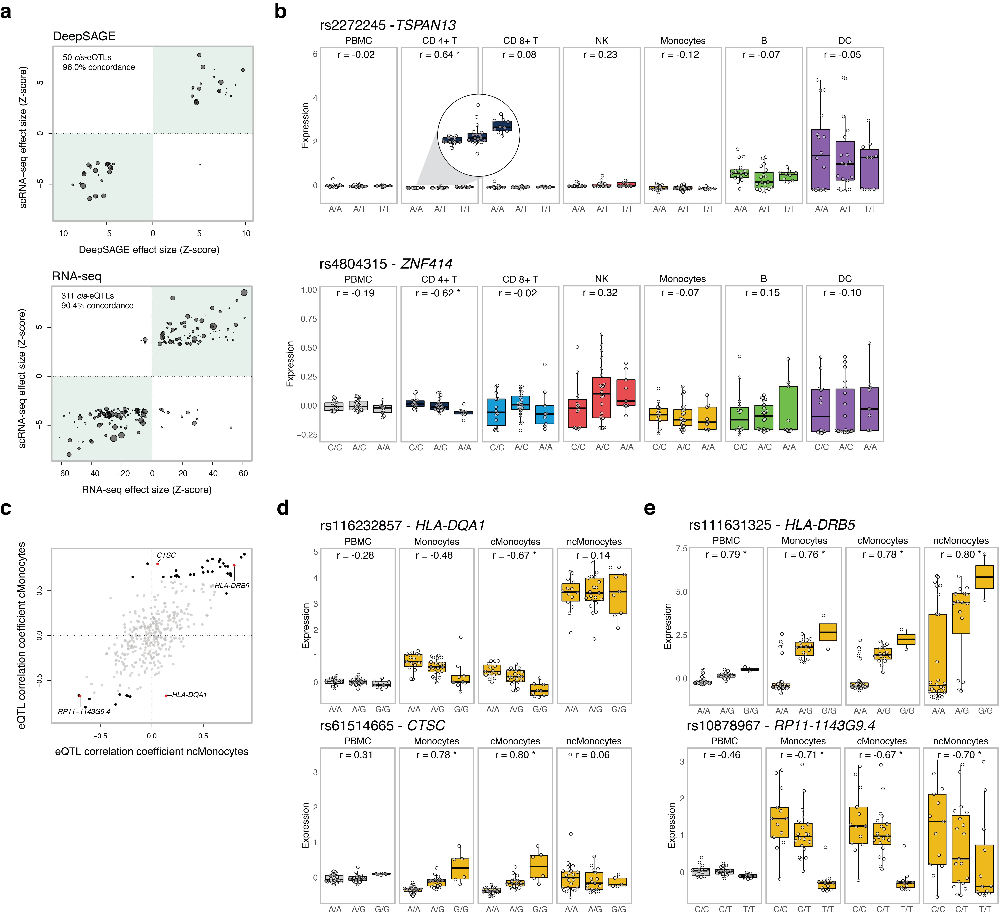

Figure 1 - cis-eQTL analysis in single-cell RNA-seq data.
(a) Effect size of the cis-eQTLs detected in the bulk-like PBMC scRNA-seq sample in which the analysis was confined to previously
reported cis-eQTLs in (top) whole blood DeepSAGE or (bottom) bulk RNA-seq data. The number and percentage represent, respectively, the detected
cis-eQTLs and their concordance (i.e. same allelic direction – green quadrants) between the bulk-like PBMC population scRNA-seq eQTLs and (top)
whole blood DeepSAGE or (bottom) bulk RNA-seq data. The size of each dot represents the mean expression of the cis-regulated gene in the total
scRNA-seq dataset. (b) Examples of undetectable cis-eQTLs in the bulk-like PBMC population caused by (top) masking of the cis-eQTL present in
CD4+ T cells but absent in DCs with comparatively high expression of the cis-regulated gene or (bottom) opposite allelic effects in CD4+ T and NK
cells. (c) Spearman’s rank correlation coefficient for the cMonocytes against the ncMonocytes of all top eQTLs that were identified in the total
dataset or at least one (sub)cell cluster (see Suppl. Table 2). Significant correlations are shown in black (four red highlighted examples are shown
in d and e), the non-significant in gray. (d) Cis-eQTLs specifically affecting expression in the cMonocytes, and not the ncMonocytes. (e) Cis-eQTLs
significantly affecting the expression in both the cMonocytes and ncMonocytes. Each dot represents the mean expression of the eQTL gene in a donor.
Box plots show the median, the first and third quartiles, and 1.5 times the interquartile range. r, Spearman’s rank correlation coefficient;
*FDR≤0.05.